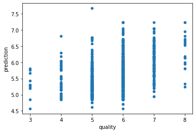
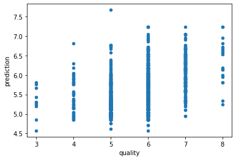

Minimum Sum of Absolute Errors Regression
Contents
Minimum Sum of Absolute Errors Regression¶
In the contemporary context of machine learning, linear regression is a supervised learning technique that produces a linear model to predict values of a dependent variable from known values of one or more independent variables. Linear regression has a long history dating back to at least the 19th century, and is a mainstay of modern data analysis.
This notebook demonstrates linear regression by using to linear programming to minimize a sum of absolute errors between the model prediction and data from a training set. The sum of absolute values of errors is the \(L_1\) norm which is known to have favorable robustness characteristics in practical use. We follow closely this paper.
# Install Pyomo and solvers for Google Colab
import sys
if "google.colab" in sys.modules:
!wget -N -q https://raw.githubusercontent.com/jckantor/MO-book/main/tools/install_on_colab.py
%run install_on_colab.py
A Wine Quality Dataset¶
Downloading the data set¶
Physical, chemical, and sensory quality properties were collected for a large number of red and white wines produced in the Portugal then donated to the UCI machine learning repository (Cortez, Paulo, Cerdeira, A., Almeida, F., Matos, T. & Reis, J.. (2009). Wine Quality. UCI Machine Learning Repository.) The following cell reads the data for red wines directly from the UCI machine learning repository.
Cortez, P., Cerdeira, A., Almeida, F., Matos, T., & Reis, J. (2009). Modeling wine preferences by data mining from physicochemical properties. Decision support systems, 47(4), 547-553. https://doi.org/10.1016/j.dss.2009.05.016
import pandas as pd
import matplotlib.pyplot as plt
red_wines = pd.read_csv("https://archive.ics.uci.edu/ml/machine-learning-databases/wine-quality/winequality-red.csv", sep=";")
red_wines
| fixed acidity | volatile acidity | citric acid | residual sugar | chlorides | free sulfur dioxide | total sulfur dioxide | density | pH | sulphates | alcohol | quality | |
|---|---|---|---|---|---|---|---|---|---|---|---|---|
| 0 | 7.4 | 0.700 | 0.00 | 1.9 | 0.076 | 11.0 | 34.0 | 0.99780 | 3.51 | 0.56 | 9.4 | 5 |
| 1 | 7.8 | 0.880 | 0.00 | 2.6 | 0.098 | 25.0 | 67.0 | 0.99680 | 3.20 | 0.68 | 9.8 | 5 |
| 2 | 7.8 | 0.760 | 0.04 | 2.3 | 0.092 | 15.0 | 54.0 | 0.99700 | 3.26 | 0.65 | 9.8 | 5 |
| 3 | 11.2 | 0.280 | 0.56 | 1.9 | 0.075 | 17.0 | 60.0 | 0.99800 | 3.16 | 0.58 | 9.8 | 6 |
| 4 | 7.4 | 0.700 | 0.00 | 1.9 | 0.076 | 11.0 | 34.0 | 0.99780 | 3.51 | 0.56 | 9.4 | 5 |
| ... | ... | ... | ... | ... | ... | ... | ... | ... | ... | ... | ... | ... |
| 1594 | 6.2 | 0.600 | 0.08 | 2.0 | 0.090 | 32.0 | 44.0 | 0.99490 | 3.45 | 0.58 | 10.5 | 5 |
| 1595 | 5.9 | 0.550 | 0.10 | 2.2 | 0.062 | 39.0 | 51.0 | 0.99512 | 3.52 | 0.76 | 11.2 | 6 |
| 1596 | 6.3 | 0.510 | 0.13 | 2.3 | 0.076 | 29.0 | 40.0 | 0.99574 | 3.42 | 0.75 | 11.0 | 6 |
| 1597 | 5.9 | 0.645 | 0.12 | 2.0 | 0.075 | 32.0 | 44.0 | 0.99547 | 3.57 | 0.71 | 10.2 | 5 |
| 1598 | 6.0 | 0.310 | 0.47 | 3.6 | 0.067 | 18.0 | 42.0 | 0.99549 | 3.39 | 0.66 | 11.0 | 6 |
1599 rows × 12 columns
A preliminary look at the data¶
The data consists of 1,599 measurements of eleven physical and chemical characteristics plus an integer measure of sensory quality recorded on a scale from 3 to 8. Histograms provides insight into the values and variability of the data set.
fig, ax = plt.subplots(3, 4, figsize=(12, 8), sharey=True)
for a, column in zip(ax.flatten(), wine_quality.columns):
red_wines[column].hist(ax=a, bins=30)
a.axvline(wine_quality[column].mean(), color='r', label="mean")
a.set_title(column)
a.legend()
plt.tight_layout()
---------------------------------------------------------------------------
NameError Traceback (most recent call last)
Input In [3], in <cell line: 3>()
1 fig, ax = plt.subplots(3, 4, figsize=(12, 8), sharey=True)
----> 3 for a, column in zip(ax.flatten(), wine_quality.columns):
4 red_wines[column].hist(ax=a, bins=30)
5 a.axvline(wine_quality[column].mean(), color='r', label="mean")
NameError: name 'wine_quality' is not defined

Here the “output” is the reported sensory quality.
red_wines.corr()["quality"].plot(kind="bar", grid=True)
ax = wine_quality.boxplot(column="alcohol", by="quality")
Simple Line Fitting¶
import pyomo.environ as pyo
def l1_fit_version1(df, y_col, x_col):
m = pyo.ConcreteModel("L1 Regression Model")
m.I = pyo.RangeSet(len(red_wines))
@m.Param(m.I)
def y(m, i):
return df.loc[i-1, y_col]
@m.Param(m.I)
def X(m, i):
return df.loc[i-1, x_col]
# regression
m.a = pyo.Var()
m.b = pyo.Var(domain=pyo.Reals)
m.e_pos = pyo.Var(m.I, domain=pyo.NonNegativeReals)
m.e_neg = pyo.Var(m.I, domain=pyo.NonNegativeReals)
@m.Expression(m.I)
def prediction(m, i):
return m.a * m.X[i] + m.b
@m.Constraint(m.I)
def prediction_error(m, i):
return m.e_pos[i] - m.e_neg[i] == m.prediction[i] - m .y[i]
@m.Objective(sense=pyo.minimize)
def sum_of_absolute_values(m):
return sum(m.e_pos[i] + m.e_neg[i] for i in m.I)
pyo.SolverFactory('cbc').solve(m)
return m
m = l1_fit_version1(red_wines, "quality", "alcohol")
print(m.sum_of_absolute_values())
865.3253941370053
vars = {i: l1_fit_version1(red_wines, "quality", i).sum_of_absolute_values() for i in red_wines.columns}
pd.Series(vars).plot(kind="bar")
<AxesSubplot:>
red_wines["prediction"] = [m.prediction[i]() for i in m.I]
red_wines["quality"].hist(label="data")
red_wines.plot(x="quality", y="prediction", kind="scatter")
<AxesSubplot:xlabel='quality', ylabel='prediction'>
 

Multivariable Regression¶
import pyomo.environ as pyo
def l1_fit_version2(df, y_col, x_cols):
m = pyo.ConcreteModel("L1 Regression Model")
m.I = pyo.RangeSet(len(red_wines))
m.J = pyo.Set(initialize=x_cols)
@m.Param(m.I)
def y(m, i):
return df.loc[i-1, y_col]
@m.Param(m.I, m.J)
def X(m, i, j):
return df.loc[i-1, j]
# regression
m.a = pyo.Var(m.J)
m.b = pyo.Var(domain=pyo.Reals)
m.e_pos = pyo.Var(m.I, domain=pyo.NonNegativeReals)
m.e_neg = pyo.Var(m.I, domain=pyo.NonNegativeReals)
@m.Expression(m.I)
def prediction(m, i):
return sum(m.a[j] * m.X[i, j] for j in m.J) + m.b
@m.Constraint(m.I)
def prediction_error(m, i):
return m.e_pos[i] - m.e_neg[i] == m.prediction[i] - m.y[i]
@m.Objective(sense=pyo.minimize)
def sum_of_absolute_values(m):
return sum(m.e_pos[i] + m.e_neg[i] for i in m.I)
pyo.SolverFactory('cbc').solve(m)
return m
m = l1_fit_version2(red_wines, "quality",
["alcohol", "volatile acidity", "citric acid", "sulphates", \
"total sulfur dioxide", "density", "fixed acidity"])
print(m.sum_of_absolute_values())
for j in m.J:
print(f"{j} {m.a[j]()}")
red_wines["prediction"] = [m.prediction[i]() for i in m.I]
red_wines["quality"].hist(label="data")
red_wines.plot(x="quality", y="prediction", kind="scatter")
799.1757322626268
alcohol 0.34242497
volatile acidity -0.98061746
citric acid -0.28927641
sulphates 0.90609119
total sulfur dioxide -0.0021873578
density -18.500829
fixed acidity 0.063818378
<AxesSubplot:xlabel='quality', ylabel='prediction'>


import pyomo.environ as pyo
l1 = pyo.ConcreteModel("L1 Regression Model")
l1.I = pyo.RangeSet(len(wine_quality))
l1.J = pyo.Set(initialize=["alcohol"])
@l1.Param(l1.I)
def y(l1, i):
return wine_quality.loc[i-1, "quality"]
@l1.Param(l1.I, l1.J)
def X(l1, i, j):
return wine_quality.loc[i-1, j]
l1.m = pyo.Var()
l1.b = pyo.Var()
l1.e_pos = pyo.Var(l1.I, domain=pyo.NonNegativeReals)
l1.e_neg = pyo.Var(l1.I, domain=pyo.NonNegativeReals)
@l1.Constraint(l1.I)
def regression(l1, i):
return l1.e_pos[i] - l1.e_neg[i] == l1.y[i] - l1.X[i]*l1.m - l1.b
@l1.Objective()
def sum_of_absolute_values(l1):
return sum(l1.e_pos[i] + l1.e_neg[i] for i in l1.I)
pyo.SolverFactory('cbc').solve(l1)
print(l1.m(), l1.b())
wine_quality["prediction"] = l1.m()*wine_quality["alcohol"] + l1.b()
wine_quality["prediction error"] = wine_quality["prediction"] - wine_quality["quality"]
#ax = wine_quality.plot(x="alcohol", y=["quality"], kind="scatter")
#wine_quality.plot(x="alcohol", y=["prediction"], ax=ax)
ax = wine_quality["quality"].hist()
wine_quality["prediction"].hist(ax=ax)
ERROR: Rule failed when generating expression for Constraint regression with
index 1: KeyError: "Index '1' is not valid for indexed component 'X'"
ERROR: Constructing component 'regression' from data=None failed: KeyError:
"Index '1' is not valid for indexed component 'X'"
---------------------------------------------------------------------------
KeyError Traceback (most recent call last)
Input In [67], in <cell line: 22>()
19 l1.e_pos = pyo.Var(l1.I, domain=pyo.NonNegativeReals)
20 l1.e_neg = pyo.Var(l1.I, domain=pyo.NonNegativeReals)
22 @l1.Constraint(l1.I)
---> 23 def regression(l1, i):
24 return l1.e_pos[i] - l1.e_neg[i] == l1.y[i] - l1.X[i]*l1.m - l1.b
26 @l1.Objective()
27 def sum_of_absolute_values(l1):
File ~/opt/anaconda3/lib/python3.9/site-packages/pyomo/core/base/block.py:67, in _generic_component_decorator.__call__(self, rule)
66 def __call__(self, rule):
---> 67 setattr(
68 self._block,
69 rule.__name__,
70 self._component(*self._args, rule=rule, **(self._kwds))
71 )
72 return rule
File ~/opt/anaconda3/lib/python3.9/site-packages/pyomo/core/base/block.py:542, in _BlockData.__setattr__(self, name, val)
537 if name not in self.__dict__:
538 if isinstance(val, Component):
539 #
540 # Pyomo components are added with the add_component method.
541 #
--> 542 self.add_component(name, val)
543 else:
544 #
545 # Other Python objects are added with the standard __setattr__
546 # method.
547 #
548 super(_BlockData, self).__setattr__(name, val)
File ~/opt/anaconda3/lib/python3.9/site-packages/pyomo/core/base/block.py:1087, in _BlockData.add_component(self, name, val)
1083 logger.debug("Constructing %s '%s' on %s from data=%s",
1084 val.__class__.__name__, name,
1085 _blockName, str(data))
1086 try:
-> 1087 val.construct(data)
1088 except:
1089 err = sys.exc_info()[1]
File ~/opt/anaconda3/lib/python3.9/site-packages/pyomo/core/base/constraint.py:748, in Constraint.construct(self, data)
745 else:
746 # Bypass the index validation and create the member directly
747 for index in self.index_set():
--> 748 self._setitem_when_not_present(index, rule(block, index))
749 except Exception:
750 err = sys.exc_info()[1]
File ~/opt/anaconda3/lib/python3.9/site-packages/pyomo/core/base/initializer.py:252, in IndexedCallInitializer.__call__(self, parent, idx)
250 return self._fcn(parent, *idx)
251 else:
--> 252 return self._fcn(parent, idx)
Input In [67], in regression(l1, i)
22 @l1.Constraint(l1.I)
23 def regression(l1, i):
---> 24 return l1.e_pos[i] - l1.e_neg[i] == l1.y[i] - l1.X[i]*l1.m - l1.b
File ~/opt/anaconda3/lib/python3.9/site-packages/pyomo/core/base/indexed_component.py:553, in IndexedComponent.__getitem__(self, index)
551 if index.__class__ is EXPR.GetItemExpression:
552 return index
--> 553 validated_index = self._validate_index(index)
554 if validated_index is not index:
555 index = validated_index
File ~/opt/anaconda3/lib/python3.9/site-packages/pyomo/core/base/indexed_component.py:778, in IndexedComponent._validate_index(self, idx)
772 raise KeyError(
773 "Cannot treat the scalar component '%s' "
774 "as an indexed component" % ( self.name, ))
775 #
776 # Raise an exception
777 #
--> 778 raise KeyError(
779 "Index '%s' is not valid for indexed component '%s'"
780 % ( idx, self.name, ))
KeyError: "Index '1' is not valid for indexed component 'X'"
Generate data¶
from sklearn.datasets import make_regression
import matplotlib.pyplot as plt
import numpy as np
n_features = 1
n_samples = 1000
noise = 30
# generate regression dataset
np.random.seed(2020)
X, y = make_regression(n_samples=n_samples, n_features=n_features, noise=noise)
if n_features == 1:
plt.scatter(X, y)
plt.show()

Model¶
import pyomo.environ as pyo
m = pyo.ConcreteModel('min abs')
n, k = X.shape
m.I = pyo.RangeSet(0, n-1)
m.J = pyo.RangeSet(0, k-1)
m.ep = pyo.Var(m.I, domain=pyo.NonNegativeReals)
m.em = pyo.Var(m.I, domain=pyo.NonNegativeReals)
m.m = pyo.Var(m.J)
m.b = pyo.Var()
@m.Constraint(m.I)
def fit(m, i):
return y[i] == m.b + m.ep[i] - m.em[i] + sum(X[i][j]*m.m[j] for j in m.J)
@m.Objective(sense=pyo.minimize)
def obj(m):
return sum(m.ep[i] + m.em[i] for i in m.I)
%time pyo.SolverFactory('glpk').solve(m)
CPU times: user 79.6 ms, sys: 14 ms, total: 93.6 ms
Wall time: 199 ms
{'Problem': [{'Name': 'unknown', 'Lower bound': 23438.9432109967, 'Upper bound': 23438.9432109967, 'Number of objectives': 1, 'Number of constraints': 1001, 'Number of variables': 2003, 'Number of nonzeros': 4001, 'Sense': 'minimize'}], 'Solver': [{'Status': 'ok', 'Termination condition': 'optimal', 'Statistics': {'Branch and bound': {'Number of bounded subproblems': 0, 'Number of created subproblems': 0}}, 'Error rc': 0, 'Time': 0.11536598205566406}], 'Solution': [OrderedDict([('number of solutions', 0), ('number of solutions displayed', 0)])]}
if n_features == 1:
plt.scatter(X, y, alpha=0.5)
plt.plot([x[0] for x in X], [pyo.value(m.b) + pyo.value(m.m[0])*x[0] for x in X ], 'r')
plt.show()
else:
print( pyo.value(m.b),[pyo.value(m) for m in m.m.values() ] )